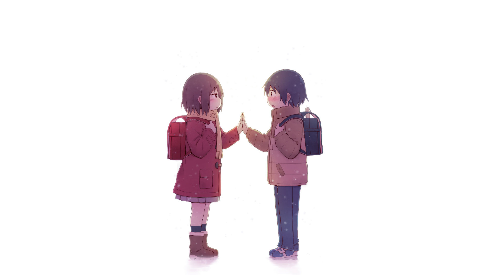
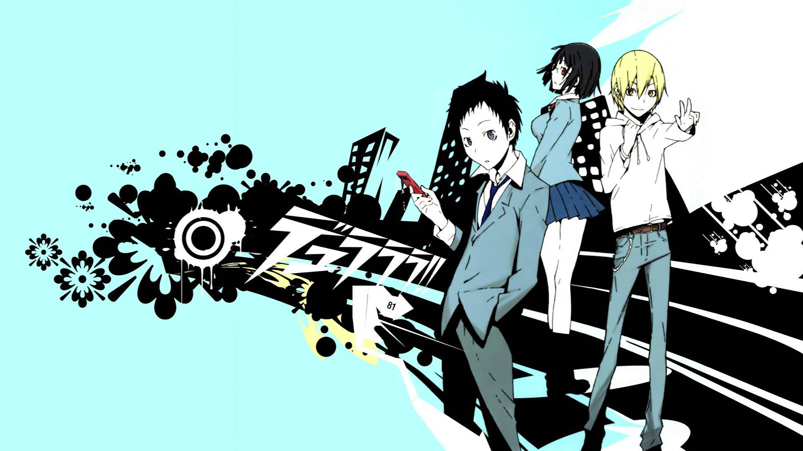

Boku Dake Ga Inai Machi

When tragedy is about to strike, Satoru Fujinuma finds himself sent back several minutes before the accident occurs. The detached, 29-year-old manga artist has taken advantage of this powerful yet mysterious phenomenon, which he calls "Revival," to save many lives. However, when he is wrongfully accused of murdering someone close to him, Satoru is sent back to the past once again, but this time to 1988, 18 years in the past. Soon, he realizes that the murder may be connected to the abduction and killing of one of his classmates, the solitary and mysterious Kayo Hinazuki, that took place when he was a child. This is his chance to make things right. Boku dake ga Inai Machi follows Satoru in his mission to uncover what truly transpired 18 years ago and prevent the death of his classmate while protecting those he cares about in the present.
Ansatsu Kyoushitsu 2

The students return as school is back in session for the second semester. Following their exploits on the island during summer vacation, Class 3-E continues to sharpen their blades with their sights set on their teacher, the slippery Koro-sensei. They have more to worry about than just their teacher, however, as enemy assassins, both old and new, are out for the increased bounty on the octopus' head. Moreover, their rivals in Class A, as well as Kunugigaoka Junior High's fearsome principal, stand to block Class E from achieving academic excellence. With all of these obstacles opposing them, the group must continue to work together in order to overcome their foes and accomplish their goal of successfully assassinating their teacher.
Akagami No Shirayuki-Hime 2

Although her name means "snow white," Shirayuki is a cheerful, red-haired girl living in the country of Tanbarun who works diligently as an apothecary at her herbal shop. Her life changes drastically when she is noticed by the silly prince of Tanbarun, Prince Raji, who then tries to force her to become his concubine. Unwilling to give up her freedom, Shirayuki cuts her long red hair and escapes into the forest, where she is rescued from Raji by Zen Wistalia, the second prince of a neighboring country, and his two aides. Hoping to repay her debt to the trio someday, Shirayuki sets her sights on pursuing a career as the court herbalist in Zen's country, Clarines. Akagami no Shirayuki-hime depicts Shirayuki's journey toward a new life at the royal palace of Clarines, as well as Zen's endeavor to become a prince worthy of his title. As loyal friendships are forged and deadly enemies formed, Shirayuki and Zen slowly learn to support each other as they walk their own paths.
Durarara!!x2 Ketsu

As Mikado Ryuugamine continues to purge the Dollars from within in accordance with his warped sense of justice, Masaomi Kida hopes to bring his friend back to his senses by bringing the Yellow Scarves together once more. Little do they know that a far more dominant force is about to enter their struggle for power, one that their friend Anri Sonohara is all too familiar with. Meanwhile, the group that has gathered at Shinra Kishitani's apartment realizes that they are on the brink of something life-changing, an event that will throw Ikebukuro into a spiral of confusion. Their anxiety is realized when reports of Celty's head being found in public start to appear all over the news as Kasane Kujiragi begins to make her move. Gone are the brief periods of tranquility as the current turmoil sets the stage for one final performance in this thrilling conclusion to the story of Ikebukuro's finest.
Hai to Gensou no Grimgar

Fear, survival, instinct. Thrown into a foreign land with nothing but hazy memories and the knowledge of their name, they can feel only these three emotions resonating deep within their souls. A group of strangers is given no other choice than to accept the only paying job in this game-like world—the role of a soldier in the Reserve Army—and eliminate anything that threatens the peace in their new world, Grimgar. When all of the stronger candidates join together, those left behind must create a party together to survive: Manato, a charismatic leader and priest; Haruhiro, a nervous thief; Yume, a cheerful hunter; Shihoru, a shy mage; Mogzo, a kind warrior; and Ranta, a rowdy dark knight. Despite its resemblance to one, this is no game—there are no redos or respawns; it is kill or be killed. It is now up to this ragtag group of unlikely fighters to survive together in a world where life and death are separated only by a fine line.